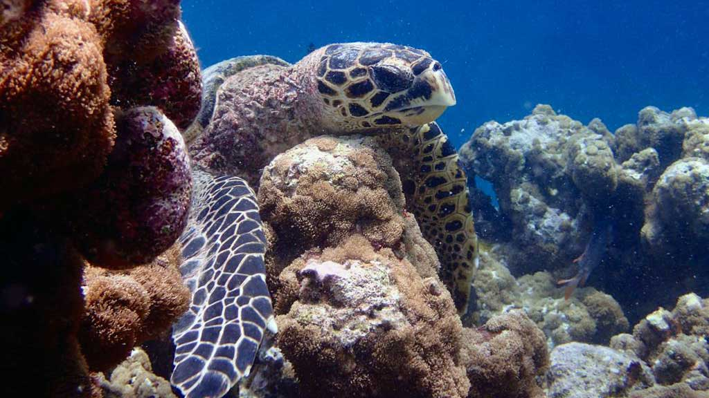
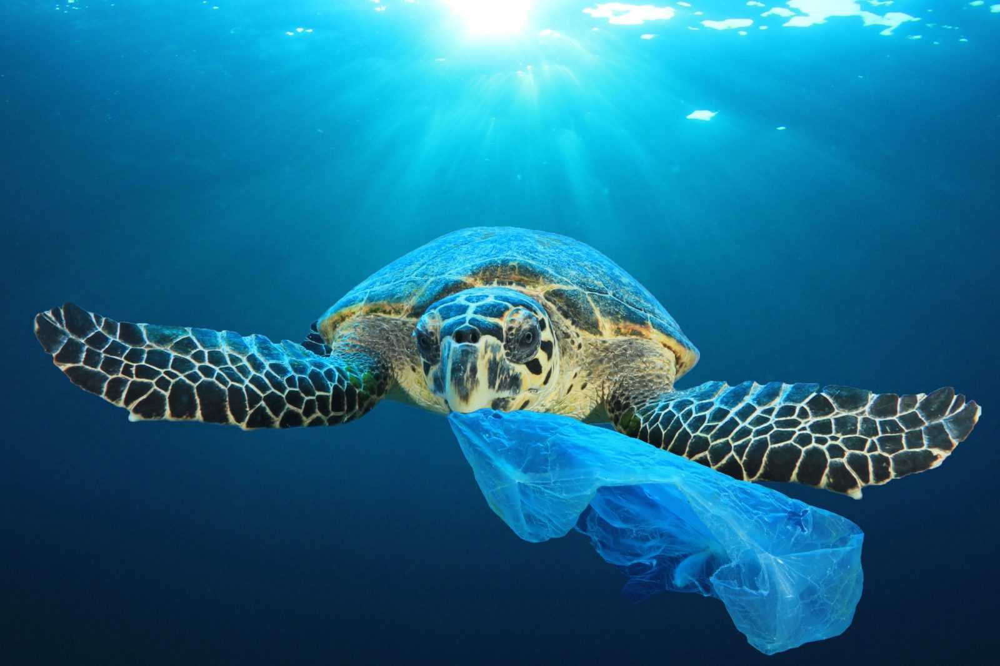
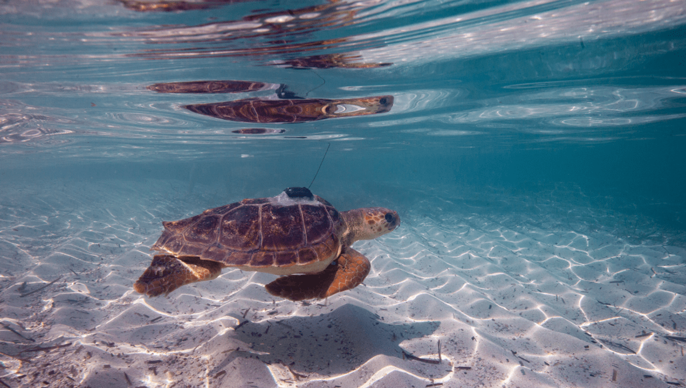

Major Threats
OVERHARVESTING AND ILLEGAL TRADE

Sea turtles continue to be harvested unsustainably both for human consumption and trade of their parts. Turtle meat and eggs are a source of food and income for many people around the world. Some also kill turtles for medicine and religious ceremonies. Tens of thousands of sea turtles are lost this way every year, devastating populations of already endangered greens and hawksbills. Killing of turtles for both domestic and international markets continues as well. International trade in all sea turtle species and their parts is prohibited under the Convention on International Trade in Endangered Species of Wild Fauna and Flora (CITES), a global agreement among governments to regulate or ban international trade in species under threat. Still, illegal trafficking persists.
CLIMATE CHANGE
All stages of a sea turtle's life are affected by environmental conditions such as temperature—even the sex of offspring. Unusually warm temperatures caused by climate change are disrupting the normal ratios, resulting in fewer male hatchlings. Warmer sea surface temperatures can also lead to the loss of important foraging grounds for sea turtles, while increasingly severe storms and sea level rise can destroy critical nesting beaches and damage nests.
POLLUTION
Sea turtles can mistake floating plastic materials for jellyfish and can choke on them when they try to eat them. These encounters are often fatal. Lost or discarded fishing gear—called ghost gear—entangles sea turtles and can drown or render a turtle unable to feed or swim. Trash on beaches can trap hatchlings and prevent them from reaching the ocean. Oil spills also poison sea turtles of all ages.
HABITAT LOSS
Sea turtles are dependent on beaches for nesting. Uncontrolled coastal development, vehicle traffic on beaches, and other human activities have directly destroyed or disturbed sea turtle nesting beaches around the world. For example, lights from roads and buildings disorient hatchlings away from the sea, and vehicle traffic on beaches compacts the sand, making it impossible for female turtles to dig nests. Turtle feeding grounds such as coral reefs and seagrass beds are damaged and destroyed by activities onshore, including sedimentation from clearing of land and nutrient run-off from agriculture. Beach restoration projects for protecting seaside buildings have also been found to be harmful, through dredging and sand filling.
5 Things we can do to protect turtles
1. Turn Out Lights Visible From the Beach
Sea turtle hatchlings use light and reflections from the moon to find their way to the water at night. Artificial lighting confuses the hatchlings and causes them to head inland instead of out to sea putting them in dangerous situations which can lead to death. Artificial lights also discourage adult females from nesting on the beach. Short of turning off your lights, you can also take measures to shield, redirect and lower the intensity of the lights on your property.
2. Reduce the Amount of Garbage You Produce and Clean Up Trash You See On the Beach
Sea turtles can become tangled in plastic and trash both on the shore and in the water. Discarded items such as fishing lines, balloons and plastic bags may also be confused for food and eaten by sea turtles, often resulting in injury or death.
3. Be Aware of Sea Turtle Nesting Areas and Avoid Nesting and Hatching Turtles
Sea turtles are cute, and therefore tempting to touch and observe but flashlights and people disturb turtles when they are nesting, or trying to nest, on the beach. Make sure to give nesting areas plenty of space, and do not disturb females as they emerge from the ocean looking for a place to nest. Also be conscious of where nesting areas are so that you can avoid trampling the hatchlings as they head to the water.
4. Reduce the Amount of Chemicals You Use
The chemicals you use on your lawn and in your home can actually wash into the coastal waters killing plants and animals. It is very important to properly dispose of toxic chemicals and, even better, find alternative products such as biodegradable solutions.
5. Volunteer
There are countless ways in which you can make a positive difference in the lives of sea turtles. Organize a clean-up day with your friends and clear the beach of litter, give a presentation to your neighborhood or local school on things they can do to save sea turtles, and most importantly, talk to others about what they can do to make sure they are not putting these important creatures in danger.